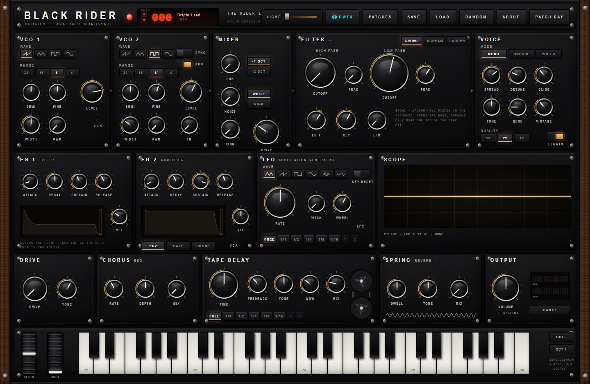
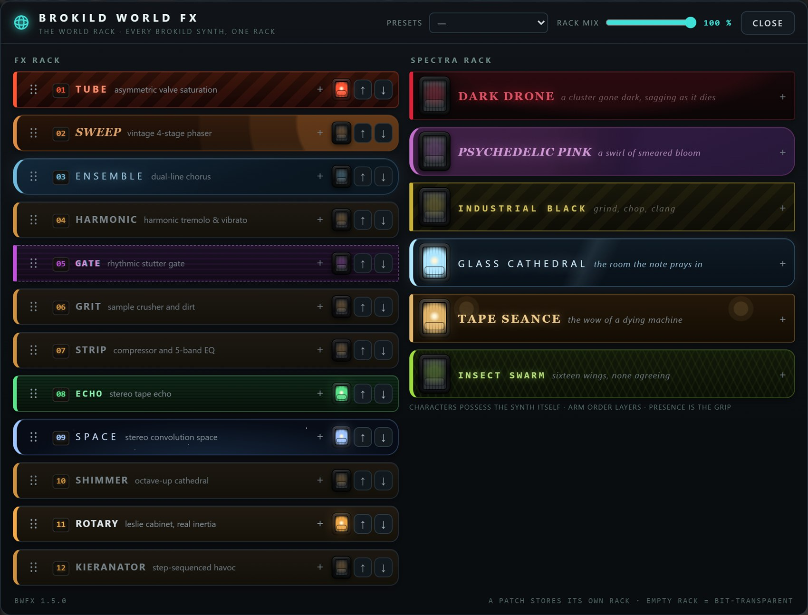

Two oscillators, one filter with a choice of temper, and a patch bay to wire it all back on itself.
An analogue monosynth in a matte-black panel with walnut cheeks. Two oscillators that stay in tune until you ask them not to — drift, hard sync, and injection-lock. One filter you choose the character of: an MS-20-style Sallen-Key screamer, or a Moog-style transistor ladder. An eight-cable patch bay that lets anything modulate anything. Three voices, a chord spread across the stereo field, and a back panel of spring, tape and bucket brigade. A keyboard, two wheels, and no menus.

They start out stable and in tune. Everything interesting happens when you stop insisting on that.
Drive the analogue-modelled cores past their comfortable range and they wobble, fold and misbehave the way real oscillators do when you overwork them.
Each oscillator has its own slow drift at its own rate, so two of them beating together never sit dead centre. The thing sounds warm because it is a little bit wrong.
Slave one oscillator to the other and sweep the slave: the classic tearing sync sweep, rich in harmonics that move with the pitch.
Let one oscillator nudge the other and, as they approach a ratio, the second snaps into lock — the way two analogue circuits entrain when they share a rail.
The filter is the voice of a synth, so Black Rider gives you the two arguments the world has been having since the 1970s — and a switch to pick a side, or split the difference.
An MS-20-style Sallen-Key filter with diodes in the feedback path. It keeps its bass as you open the resonance, and screams only near the top of the dial — a thin, aggressive, slightly unhinged resonance for most of the travel.
The same circuit pushed much harder: it self-oscillates just past two o'clock and runs deep into the diodes above that. Because it sings exactly at the cutoff and follows the keyboard, turn the oscillators down and play the filter itself as an in-tune voice.
A Moog-style four-pole ladder. Its resonance is round rather than sharp, it thins the low end as it resonates, and at self-oscillation it sings a clean sine.
The front panel gets you a sound. The patch bay is where it stops being a preset and starts being yours.
Eight cables, and each one wires any source to any destination — an envelope onto the filter, an oscillator onto another oscillator's pitch, a wheel onto the drive, the reverb send onto itself. Nothing is off limits, which means some of it is a very bad idea, which is the point. The signal can loop back on itself and feed a modulation path with its own output.
A red LED in the header, numbered 000 to 199. Every number is a whole patch — generated from the number alone, the same on every machine.
Dial a seed and the entire instrument jumps to it: oscillators, filter, envelopes, effects, even patch-bay cables. Because each seed is assigned a category first and its parameters are then generated to fit, the name and the category always match the sound. The PATCHES menu lists all two hundred grouped by kind — bass, lead, pluck, pad, strings, organ, brass, keys, drone, sync and noise — with twelve hand-made signature patches at the top. RANDOM dials one at random.
A monosynth that can, when you want it to, be five of itself.
Black Rider is five-note polyphonic. Hold a chord on the built-in keyboard or send one over MIDI and the notes are spread across the stereo field — five stereo stations, far left to far right, filled in pitch order. A chord struck together lands ranked across the room; a note added to a chord already sounding takes the nearest free station, and nothing that is already playing ever moves. A single held note sits dead centre. Pitch and mod wheels sit where your left hand expects them, and the on-screen keyboard plays the instrument without a controller plugged in at all.
Four effects, all modelled on the analogue circuits that gave them their sound — not clean digital versions of them.
| Effect | What it is |
|---|---|
| Spring reverb | An authentic spring tank — the boing, the drip, the rattle when you hit it hard. Not a hall, not a plate. A box of springs. |
| Tape delay | Delay with the wow, the flutter and the softening high end of a tape loop, so repeats degrade the way they should instead of copying forever. |
| BBD chorus | A bucket-brigade chorus: the gritty, slightly dark modulation of an analogue delay-line chorus rather than a pristine one. |
| Drive | An overdrive stage for the whole voice — from a warm edge to a fully cooked, saturated growl. |
Twelve more pedals and six characters, on top of the four analogue effects on the back panel.
Every Brokild synth carries the same rack — not a copy of it, the identical set of effects and characters, compiled in and saved inside each patch. The globe on the panel opens two racks side by side: effects on the left, characters on the right. An effect processes what the synth has already made. A character reaches back into the instrument and changes how it makes it.

The characters get inside the two oscillators and the filter: the detuning spreads over the five voices, the sag is keyed to each note’s gate, and a drone held open by the VCA never sags at all. Characters stack, and PRESENCE on a character is how hard it grips, so you can have a suggestion of one and the full weight of another.
Nothing is on when you start, and an empty rack is not a bypass — it is an absence: the audio never enters it, so a patch made before the rack existed sounds exactly as it did, to the sample. Ten preset racks come built in, and because the rack is shared code, every Brokild synth gets new modules on its next build.
Two minutes. There is no installer — a VST3 plugin is a folder you copy into place.
Black Rider.vst3 folder,
a standalone Black Rider.exe, the manual and a readme.Black Rider.vst3 folder — not just the file inside
it — into C:\Program Files\Common Files\VST3\. Windows will ask for
administrator permission; that is normal.| Requirement | Detail |
|---|---|
| System | Windows 10 or 11, 64-bit |
| Build | 260826.5 — shown on the loading screen and in the panel footer |
| Format | VST3 instrument, stereo out, MIDI in. A standalone application is in the same zip. |
| Polyphony | Five voices, with the held chord spread across the stereo field |
| Sample rates | Any. Tested at 44.1, 48, 88.2 and 96 kHz. |
| Hosts | Any VST3 host — developed against Ableton Live 12 |
| Price | Free. No account, no registration, no telemetry. |